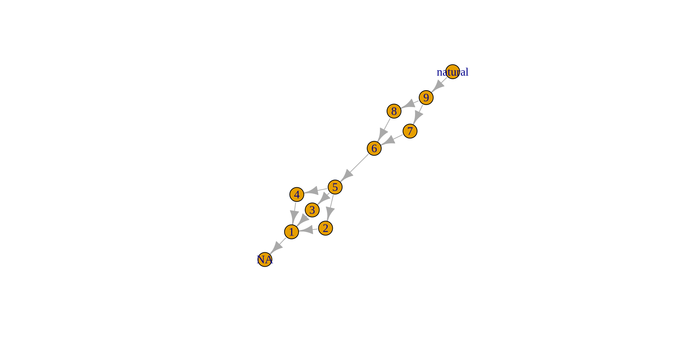

Joe Roe
https://joeroe.io
📦 igraph <https://igraph.org/r/>
📦 ggraph <https://ggraph.data-imaginist.com/>
Class 'igraph' hidden list of 10
$ : num 11
$ : logi TRUE
$ : num [1:13] 0 1 2 3 4 4 4 5 6 7 ...
$ : num [1:13] 10 0 0 0 1 2 3 4 5 5 ...
$ : num [1:13] 0 1 2 3 4 5 6 7 8 9 ...
$ : num [1:13] 1 2 3 4 5 6 7 8 9 10 ...
$ : num [1:12] 0 1 2 3 4 7 8 9 10 12 ...
$ : num [1:12] 0 3 4 5 6 7 9 10 11 12 ...
$ :List of 4
..$ : num [1:3] 1 0 1
..$ : Named list()
..$ :List of 1
.. ..$ name: chr [1:11] "1" "2" "3" "4" ...
..$ :List of 2
.. ..$ below:List of 13
.. .. ..$ : chr [1:3] "2" "3" "4"
.. .. ..$ : chr "5"
.. .. ..$ : chr "5"
.. .. ..$ : chr "5"
.. .. ..$ : chr "6"
.. .. ..$ : chr "6"
.. .. ..$ : chr "6"
.. .. ..$ : chr [1:2] "7" "8"
.. .. ..$ : chr "9"
.. .. ..$ : chr "9"
.. .. ..$ : chr "natural"
.. .. ..$ : chr "natural"
.. .. ..$ : chr NA
.. ..$ equal: chr [1:13] NA NA NA NA ...
$ :<environment: 0x561f52a1ba20> 📦 tidygraph <https://tidygraph.data-imaginist.com/>
# A tbl_graph: 10 nodes and 12 edges
#
# A directed acyclic simple graph with 1 component
#
# Node Data: 10 × 4 (active)
context above below equal
<chr> <list> <list> <chr>
1 1 <chr [1]> <chr [3]> <NA>
2 2 <chr [1]> <chr [1]> <NA>
3 3 <chr [1]> <chr [1]> <NA>
4 4 <chr [1]> <chr [1]> <NA>
5 5 <chr [3]> <chr [1]> <NA>
6 6 <chr [1]> <chr [2]> <NA>
# … with 4 more rows
#
# Edge Data: 12 × 2
from to
<int> <int>
1 1 2
2 1 3
3 1 4
# … with 9 more rowslibrary(c14)
library(dplyr)
ppnd %>%
filter(site == "Ganj Dareh") %>%
mutate(cal = c14_calibrate(cra, error))# A tibble: 9 × 11
lab_id site latit…¹ longi…² context cra error d13c
<chr> <chr> <dbl> <dbl> <chr> <int> <int> <chr>
1 GaK 807 Ganj D… 34.2 47.5 Niv. E… 10400 150 <NA>
2 OxA 2099 Ganj D… 34.2 47.5 GD.Fl.… 8840 110 <NA>
3 OxA 2100 Ganj D… 34.2 47.5 GD.Fl.… 9010 110 <NA>
# … with 6 more rows, 3 more variables: material <chr>,
# references <chr>, cal <cal>, and abbreviated variable
# names ¹​latitude, ²​longitude // CQL2 generated by stratigraphr v0.3.0.9000
Sequence("Shubayqa 1")
{
Boundary("");
Phase("Phase 7")
{
R_Date("RTD-7951", 12166, 55);
R_Date("Beta-112146", 12310, 60);
R_Date("RTD-7317", 12289, 46);
R_Date("RTD-7318", 12332, 46);
R_Date("RTD-7948", 12478, 38);
};
Boundary("");
Phase("Phase 6")
{
R_Date("RTD-7947", 12322, 38);
R_Date("RTD-7313", 12346, 46);
R_Date("RTD-7311", 12367, 65);
R_Date("RTD-7312", 12405, 50);
R_Date("RTD-7314", 12273, 48);
R_Date("RTD-7316", 12337, 46);
R_Date("RTD-7315", 12445, 70);
};
Boundary("");
Phase("Phase 5")
{
R_Date("RTK-6818", 12477, 76);
R_Date("RTK-6820", 12385, 75);
R_Date("RTK-6821", 12385, 78);
R_Date("RTK-6822", 12412, 79);
R_Date("RTK-6823", 12321, 78);
};
Boundary("");
Phase("Phase 4")
{
R_Date("RTK-6813", 12344, 85);
R_Date("RTK-6816", 12389, 78);
};
Boundary("");
Phase("Phase 3")
{
R_Date("RTK-6819", 11325, 74);
};
Boundary("");
Phase("Phase 2")
{
R_Date("RTK-6812", 11365, 72);
R_Date("RTK-6817", 11322, 75);
};
Boundary("");
Phase("Phase 1")
{
R_Date("RTD-8904", 10317, 38);
R_Date("RTK-6814", 10229, 70);
R_Date("RTD-8902", 10107, 53);
R_Date("RTD-8903", 10095, 52);
};
Boundary("");
};📦 oxcAAR <https://github.com/ISAAKiel/oxcAAR>